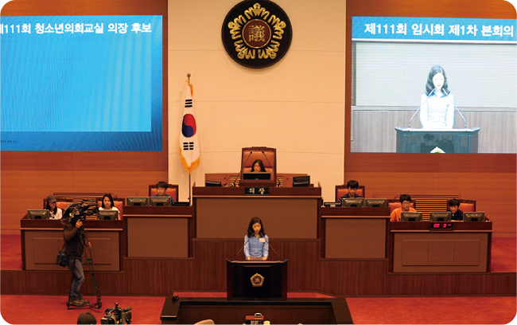

자료 읽기청소년 의회 교실

◯◯시 의회에서 개최한 청소년 의회 교실에 ◯◯ 중학교 학생들이 참여해의회 정치 활동을 체험했다. 학생들은 ‘학교 폭력 가해 기록 사실을 학교 생활 기록부에 기재하는 기간을 늘려야 한다.’ 등 최근 사회 문제로 떠오른 학교 폭력을 주제로 건의와 자유 발언을 진행하면서 다양한 의견을 말했다. 그 밖에도 ‘자유 학년제 폐지’ 등 두 건의 안건을 올려 처리하며 열띤 의회 정치 활동을 펼쳐 나갔다. 학생들은 “실제 의원들이 활동하는 장소에 오니까 긴장되었지만, 흔 하지 않은 체험을 해 볼 수 있는 기회여서 더없이 좋았다.”라고 말했다. 또 “생소하게 느껴 왔던 시 의원들의 의회 정치 활동을 어느 정도 이해할 수 있었던 귀중한 시간이었다.”라고 소감을 밝혔다
- 『데일리한국』, 2023. 5. 25.
● 청소년 의회를 운영한 까닭은 무엇일까? 만약 내가 청소년 의회에 참여한다면 어떤 발언을 할까?
청소년 의회를 운영한 까닭은 학생들도 학교 폭력 문제에 대한 자신의 생각을 밝히고, 다른 사람의 의견을 듣는 시간이 필요하기 때문이다. 만약 내가 청소년 의회에 참여한다면, 학교에서 소외되는 친구가 없도록 하는 방안을 찾아야 한다고 발언할 것이다.